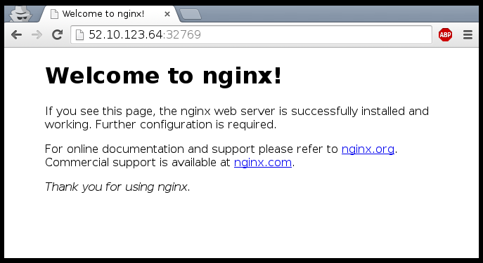
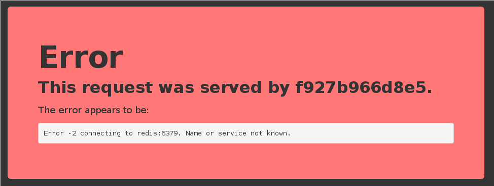
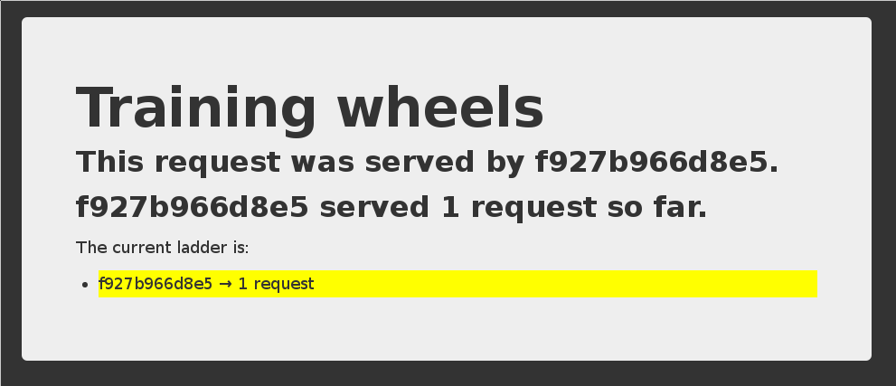

Lviv University
Objectives
We will now run network services (accepting requests) in containers.
At the end of this section, you will be able to:
Run a network service in a container.
Connect to that network service.
Find a container’s IP address.
Definitions
| Keyword | Description |
|---|---|
| VM | A virtual machine (VM) is a software simulation of a physical computer that runs on a host computer. It provides a separate operating system and resources, allowing multiple operating systems to run on a single physical machine. |
| Cluster | A cluster is a group of connected servers that work together as a single system to provide high availability, scalability, and increased performance for applications. The nodes in a cluster are connected through a network and share resources to provide a unified, highly available solution. |
| Node | A cluster node is a single server within a cluster computing system. It provides computing resources and works together with other nodes to perform tasks as a unified system, providing high availability and scalability for applications. |
Definitions
| Keyword | Description |
|---|---|
| Network | A network is a group of interconnected devices that can exchange data and information. Networks can be used to connect computers, servers, mobile devices, and other types of devices and allow them to communicate with each other and share resources, such as printers and storage. More specifically in our case, these are physical and software-defined communication paths between individual nodes of a cluster and programs running on those nodes. |
| Port | A port is a communication endpoint in a network-attached device, such as a computer or server. It allows the device to receive and send data to other devices on the network through a specific network protocol, such as TCP or UDP. Each port has a unique number that is used to identify it, and different services and applications use specific ports to communicate. |
| Service | A piece of software that implements a limited set of functionalities that are then used by other parts of the application. |
Running a very simple service
We need something small, simple, easy to configure
(or, even better, that doesn’t require any configuration at all)
Let’s use the official NGINX image (named nginx)
It runs a static web server listening on port 80
It serves a default “Welcome to nginx!” page
Running an NGINX server
Docker will automatically pull the nginx image from the Docker Hub
-d / --detach tells Docker to run it in the background
P / --publish-all tells Docker to publish all ports
(publish = make them reachable from other computers)
…OK, how do we connect to our web server now?
Finding our web server port
First, we need to find the port number used by Docker
(the NGINX container listens on port 80, but this port will be mapped)
We can use docker ps:
This means:
port 12345 on the Docker host is mapped to port 80 in the container
Now we need to connect to the Docker host!
Finding the address of the Docker host
When running Docker on your Linux workstation:
use localhost, or any IP address of your machine
When running Docker on a remote Linux server:
use any IP address of the remote machine
When running Docker Desktop on Mac or Windows:
use localhost
In other scenarios (docker-machine, local VM…):
use the IP address of the Docker VM
Connecting to our web server (GUI)
Point your browser to the IP address of your Docker host, on the port shown by docker ps for container port 80.

How does Docker know which port to map?
There is metadata in the image telling “this image has something on port 80”.
We can see that metadata with docker inspect:
This metadata was set in the Dockerfile, with the EXPOSE keyword.
We can see that with docker history:
Why can’t we just connect to port 80?
Our Docker host has only one port 80
Therefore, we can only have one container at a time on port 80
Therefore, if multiple containers want port 80, only one can get it
By default, containers do not get “their” port number, but a random one
(not “random” as “crypto random”, but as “it depends on various factors”)
We’ll see later how to force a port number (including port 80!)
Using multiple IP addresses
Hey, my network-fu is strong, and I have questions…
Can I publish one container on 127.0.0.2:80, and another on 127.0.0.3:80?
My machine has multiple (public) IP addresses, let’s say A.A.A.A and B.B.B.B.
Can I have one container on A.A.A.A:80 and another on B.B.B.B:80?
I have a whole IPV4 subnet, can I allocate it to my containers?
What about IPV6?
You can do all these things when running Docker directly on Linux.
(On other platforms, generally not, but there are some exceptions.)
Manual allocation of port numbers
If you want to set port numbers yourself, no problem:
Note
The convention is port-on-host:port-on-container.
Plumbing containers into your infrastructure
There are many ways to integrate containers in your network.
Start the container, letting Docker allocate a public port for it.
Then retrieve that port number and feed it to your configuration.
Pick a fixed port number in advance, when you generate your configuration.
Then start your container by setting the port numbers manually.
Use an orchestrator like Kubernetes or Swarm.
The orchestrator will provide its own networking facilities.
Orchestrators typically provide mechanisms to enable direct container-to-container communication across hosts, and publishing/load balancing for inbound traffic.
Finding the container’s IP address
We can use the docker inspect command to find the IP address of the container.
docker inspect is an advanced command, that can retrieve a ton of information about our containers.
Here, we provide it with a format string to extract exactly the private IP address of the container.
Pinging our container
Let’s try to ping our container from another container.
When running on Linux, we can even ping that IP address directly!
(And connect to a container’s ports even if they aren’t published.)
How often do we use -p and -P ?
When running a stack of containers, we will often use Compose
Compose will take care of exposing containers
(through a ports: section in the docker-compose.yml file)
It is, however, fairly common to use docker run -P for a quick test
Or docker run -p ... when an image doesn’t EXPOSE a port correctly
Section summary
We’ve learned how to:
Expose a network port.
Connect to an application running in a container.
Find a container’s IP address.
Overview
The Docker Engine supports different network drivers.
The built-in drivers include:
bridge (default)
null (for the special network called none)
host (for the special network called host)
container (that one is a bit magic!)
The network is selected with docker run --net ....
Each network is managed by a driver.
The different drivers are explained with more details on the following slides.
The default bridge
By default, the container gets a virtual eth0 interface.
(In addition to its own private lo loopback interface.)
That interface is provided by a veth pair.
It is connected to the Docker bridge.
(Named docker0 by default; configurable with --bridge.)
Addresses are allocated on a private, internal subnet.
(Docker uses 172.17.0.0/16 by default; configurable with --bip.)
Outbound traffic goes through an iptables MASQUERADE rule.
Inbound traffic goes through an iptables DNAT rule.
The container can have its own routes, iptables rules, etc.
The null driver
Container is started with docker run --net none ...
It only gets the lo loopback interface. No eth0.
It can’t send or receive network traffic.
Useful for isolated/untrusted workloads.
The host driver
Container is started with docker run --net host ...
It sees (and can access) the network interfaces of the host.
It can bind any address, any port (for ill and for good).
Network traffic doesn’t have to go through NAT, bridge, or veth.
Performance = native!
Use cases:
Performance sensitive applications (VOIP, gaming, streaming…)
Peer discovery (e.g. Erlang port mapper, Raft, Serf…)
The container driver
Container is started with docker run --net container:id ...
It re-uses the network stack of another container.
It shares with this other container the same interfaces, IP address(es), routes, iptables rules, etc.
Those containers can communicate over their lo interface.
(i.e. one can bind to 127.0.0.1 and the others can connect to it.)
Objectives
We will learn about the CNM (Container Network Model).
At the end of this lesson, you will be able to:
Create a private network for a group of containers.
Use container naming to connect services together.
Dynamically connect and disconnect containers to networks.
Set the IP address of a container.
We will also explain the principle of overlay networks and network plugins.
The Container Network Model
Docker has “networks”.
We can manage them with the docker network commands; for instance:
New networks can be created (with docker network create).
(Note: networks none and host are special; let’s set them aside for now.)
What’s a network?
Conceptually, a Docker “network” is a virtual switch
(we can also think about it like a VLAN, or a WiFi SSID, for instance)
By default, containers are connected to a single network
(but they can be connected to zero, or many networks, even dynamically)
Each network has its own subnet (IP address range)
A network can be local (to a single Docker Engine) or global (span multiple hosts)
Containers can have network aliases providing DNS-based service discovery
(and each network has its own “domain”, “zone”, or “scope”)
Service discovery
A container can be given a network alias
(e.g. with docker run --net some-network --net-alias db ...)
The containers running in the same network can resolve that network alias
(i.e. if they do a DNS lookup on db, it will give the container’s address)
We can have a different db container in each network
(this avoids naming conflicts between different stacks)
When we name a container, it automatically adds the name as a network alias
(i.e. docker run --name xyz ... is like docker run --net-alias xyz ...
Network isolation
Networks are isolated
By default, containers in network A cannot reach those in network B
A container connected to both networks A and B can act as a router or proxy
Published ports are always reachable through the Docker host address
(docker run -P ... makes a container port available to everyone)
How to use networks
We typically create one network per “stack” or app that we deploy
More complex apps or stacks might require multiple networks
(e.g. frontend, backend, …)
Networks allow us to deploy multiple copies of the same stack
(e.g. prod, dev, pr-442, ….)
If we use Docker Compose, this is managed automatically for us
Multiple containers on the default bridge network, on a Linux machine
Multiple containers in multiple bridge networks, on a Linux machine
Multiple containers in multiple bridge networks, on a Mac/Windows machine
CNM vs CNI
CNM is the model used by Docker
Kubernetes uses a different model, architectured around CNI
(CNI is a kind of API between a container engine and CNI plugins)
Docker model:
Kubernetes model:
Creating a network
Let’s create a network called dev.
The network is now visible with the network ls command:
Communication between containers
Now, create another container on this network.
From this new container, we can resolve and ping the other one, using its assigned name:
/ # ping es
PING es (172.18.0.2) 56(84) bytes of data.
64 bytes from es.dev (172.18.0.2): icmp_seq=1 ttl=64 time=0.221 ms
64 bytes from es.dev (172.18.0.2): icmp_seq=2 ttl=64 time=0.114 ms
64 bytes from es.dev (172.18.0.2): icmp_seq=3 ttl=64 time=0.114 ms
^C
--- es ping statistics ---
3 packets transmitted, 3 received, 0% packet loss, time 2000ms
rtt min/avg/max/mdev = 0.114/0.149/0.221/0.052 ms
root@0ecccdfa45ef:/#Resolving container addresses
Since Docker Engine 1.10, name resolution is implemented by a dynamic resolver.
Archeological note: when CNM was introduced (in Docker Engine 1.9, November 2015) name resolution was implemented with /etc/hosts, and it was updated each time CONTAINERs were added/removed. This could cause interesting race conditions since /etc/hosts was a bind-mount (and couldn’t be updated atomically).
Overview
Let’s try to run an application that requires two containers.
The first container is a web server.
The other one is a redis data store.
We will place them both on the dev network created before.
Running the web server
The application is provided by the container image jpetazzo/trainingwheels.
We don’t know much about it so we will try to run it and see what happens!
Start the container, exposing all its ports:
Check the port that has been allocated to it:
Test the web server

redis.Note: we’re not using a FQDN or an IP address here; just redis.
Test the web server again

redis, instead of getting a DNS error, it gets the IP address of our Redis container.A few words on scope
Container names are unique (there can be only one --name redis)
Network aliases are not unique
We can have the same network alias in different networks:
We can even have multiple containers with the same alias in the same network
(in that case, we get multiple DNS entries, aka “DNS round robin”)
Names are local to each network
Let’s try to ping our es container from another container, when that other container is not on the dev network.
Names can be resolved only when containers are on the same network.
Containers can contact each other only when they are on the same network (you can try to ping using the IP address to verify).
Network aliases
prod, with its own es container. But there can be only one container named es!Creating containers on another network
Create the prod network.
We can now create multiple containers with the es alias on the new prod network.
Connecting to aliased containers
Each ElasticSearch instance has a name (generated when it is started). This name can be seen when we issue a simple HTTP request on the ElasticSearch API endpoint.
Try the following command a few times:
Then try it a few times by replacing --net dev with --net prod:
Good to know …
Docker will not create network names and aliases on the default bridge network.
Therefore, if you want to use those features, you have to create a custom network first.
Network aliases are not unique on a given network.
i.e., multiple containers can have the same alias on the same network.
In that scenario, the Docker DNS server will return multiple records.
(i.e. you will get DNS round robin out of the box.)
Enabling Swarm Mode gives access to clustering and load balancing with IPVS.
Creation of networks and network aliases is generally automated with tools like Compose.
Custom networks
When creating a network, extra options can be provided.
--internal disables outbound traffic (the network won’t have a default gateway).
--gateway indicates which address to use for the gateway (when outbound traffic is allowed).
--subnet (in CIDR notation) indicates the subnet to use.
--ip-range (in CIDR notation) indicates the subnet to allocate from.
--aux-address allows specifying a list of reserved addresses (which won’t be allocated to containers).
Setting containers’ IP address
--ip.A full example would look like this.
Important
Don’t hard code container IP addresses in your code!
Connecting and disconnecting dynamically
So far, we have specified which network to use when starting the container.
The Docker Engine also allows connecting and disconnecting while the container is running.
This feature is exposed through the Docker API, and through two Docker CLI commands:
docker network connect <network> <container>
docker network disconnect <network> <container>
Dynamically connecting to a network
We have a container named es connected to a network named dev.
Let’s start a simple alpine container on the default network:
In this container, try to ping the es container:
This doesn’t work, but we will change that by connecting the container.
Looking at the network setup in the container
We can look at the list of network interfaces with ifconfig, ip a, or ip l:
/ # ip a
1: lo: <LOOPBACK,UP,LOWER_UP> mtu 65536 qdisc noqueue state UNKNOWN qlen 1000
link/loopback 00:00:00:00:00:00 brd 00:00:00:00:00:00
inet 127.0.0.1/8 scope host lo
valid_lft forever preferred_lft forever
18: eth0@if19: <BROADCAST,MULTICAST,UP,LOWER_UP,M-DOWN> mtu 1500 qdisc noqueue state UP
link/ether 02:42:ac:11:00:02 brd ff:ff:ff:ff:ff:ff
inet 172.17.0.2/16 brd 172.17.255.255 scope global eth0
valid_lft forever preferred_lft forever
20: eth1@if21: <BROADCAST,MULTICAST,UP,LOWER_UP,M-DOWN> mtu 1500 qdisc noqueue state UP
link/ether 02:42:ac:14:00:04 brd ff:ff:ff:ff:ff:ff
inet 172.20.0.4/16 brd 172.20.255.255 scope global eth1
valid_lft forever preferred_lft forever
/ #Each network connection is materialized with a virtual network interface.
As we can see, we can be connected to multiple networks at the same time.
Disconnecting from a network
Let’s try the symmetrical command to disconnect the container:
From now on, if we try to ping es, it will not resolve:
Trying to ping the IP address directly won’t work either:
Network aliases are scoped per network
Each network has its own set of network aliases.
We saw this earlier: es resolves to different addresses in dev and prod.
If we are connected to multiple networks, the resolver looks up names in each of them (as of Docker Engine 18.03, it is the connection order) and stops as soon as the name is found.
Therefore, if we are connected to both dev and prod, resolving es will not give us the addresses of all the es services; but only the ones in dev or prod.
However, we can lookup es.dev or es.prod if we need to.
Building with a custom network
We can build a Dockerfile with a custom network with docker build --network NAME.
This can be used to check that a build doesn’t access the network.
(But keep in mind that most Dockerfiles will fail,
because they need to install remote packages and dependencies!)
This may be used to access an internal package repository.
(But try to use a multi-stage build instead, if possible!)
Objectives
At the end of this section, you will be able to:
Create containers holding volumes.
Share volumes across containers.
Share a host directory with one or many containers.
Working with volumes
Docker volumes can be used to achieve many things, including:
Bypassing the copy-on-write system to obtain native disk I/O performance.
Bypassing copy-on-write to leave some files out of docker commit.
Sharing a directory between multiple containers.
Sharing a directory between the host and a container.
Sharing a single file between the host and a container.
Using remote storage and custom storage with volume drivers.
Volumes are special directories in a container
Volumes bypass the copy-on-write system
Volumes act as passthroughs to the host filesystem.
The I/O performance on a volume is exactly the same as I/O performance on the Docker host.
When you docker commit, the content of volumes is not brought into the resulting image.
If a RUN instruction in a Dockerfile changes the content of a volume, those changes are not recorded neither.
If a container is started with the --read-only flag, the volume will still be writable (unless the volume is a read-only volume).
Volumes can be shared across containers
--volumes-from flag for docker run.Sharing app server logs with another container
Let’s start a Tomcat container:
Now, start an alpine container accessing the same volume:
Then, from another window, send requests to our Tomcat container:
Volumes exist independently of containers
If a container is stopped or removed, its volumes still exist and are available.
Volumes can be listed and manipulated with docker volume subcommands:
Some of those volume names were explicit (pgdata-prod, pgdata-dev).
The others (the hex IDs) were generated automatically by Docker.
Populating volumes
When an empty volume is mounted on a non-empty directory, the directory is copied to the volume.
This makes it easy to “promote” a normal directory to a volume.
Non-empty volumes are always mounted as-is.
Let’s populate the webapps volume with the webapps.dist directory from the Tomcat image.
Note
Running true will cause the container to exit successfully once the webapps.dist directory has been copied to the webapps volume, instead of starting tomcat.
Using our named volumes
Volumes are used with the -v option.
When a host path does not contain a /, it is considered a volume name.
Let’s start a web server using the two previous volumes.
Check that it’s running correctly:
Using a volume in another container
We will make changes to the volume from another container.
In this example, we will run a text editor in the other container.
(But this could be an FTP server, a WebDAV server, a Git receiver…)
Let’s start another container using the webapps volume.
Vandalize the page, save, exit.
Then run curl localhost:1234 again to see your changes.
Migrating data with --volumes-from
The --volumes-from option tells Docker to re-use all the volumes of an existing container.
Scenario: migrating from Redis 2.8 to Redis 3.0.
We have a container (myredis) running Redis 2.8.
Stop the myredis container.
Start a new container, using the Redis 3.0 image, and the --volumes-from option.
The new container will inherit the data of the old one.
Newer containers can use --volumes-from too.
Doesn’t work across servers, so not usable in clusters (Swarm, Kubernetes).
Volumes lifecycle
When you remove a container, its volumes are kept around.
You can list them with docker volume ls.
You can access them by creating a container with docker run -v.
You can remove them with docker volume rm or docker system prune.
Ultimately, you are the one responsible for logging, monitoring, and backup of your volumes.
Checking volumes used by a container
To look which paths are actually volumes, and to what they are bound, use docker inspect (again):
Sharing a single file
The same -v flag can be used to share a single file (instead of a directory).
One of the most interesting examples is to share the Docker control socket.
From that container, you can now run docker commands communicating with the Docker Engine running on the host. Try docker ps!
Warning
Since that container has access to the Docker socket, it has root-like access to the host.
Volumes vs. Mounts
Since Docker 17.06, a new options is available: --mount.
It offers a new, richer syntax to manipulate data in containers.
It makes an explicit difference between:
volumes (identified with a unique name, managed by a storage plugin),
bind mounts (identified with a host path, not managed).
The former -v / --volume option is still usable.
--mount syntax
Binding a host path to a container path:
Mounting a volume to a container path:
Mounting a tmpfs (in-memory, for temporary files):
Section summary
We’ve learned how to:
Create and manage volumes.
Share volumes across containers.
Share a host directory with one or many containers.